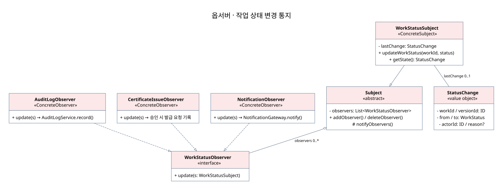
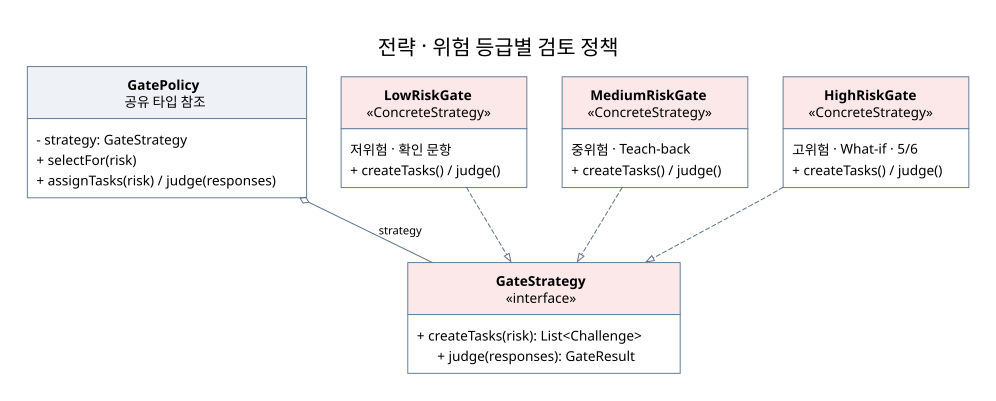
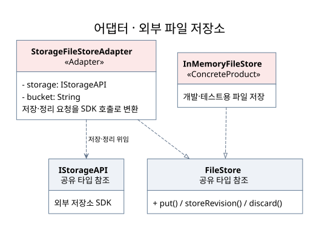

HAVE 통합 클래스와 설계 패턴
관계 대응표와 다중도
Revision의 보완 근거는 Review 또는 반려 ApprovalCase 중 하나다. 새 버전은 이전 승인을 상속하지 않는다.
영역 내부 관계의 전체 제약 보기
- User [1] — WorkMember [0..*] · 사용자별 참여
- Work [1] — WorkMember [1..*] · 멤버십 {userId, workId 유일}
- User [1] — Work [0..*] · 작성자 / owner
- Work [1] — WorkVersion [0..*] · 버전 {제출 시 1개 이상}
- WorkVersion [0..1] — WorkVersion [0..1] · 직전 버전 / 후속 버전 {비순환}
- WorkVersion [1] — AiDisclosure [1] · 제출 시 고정 사본
- AiDisclosure [1] — AiToolUsage [0..*] · 도구 목록 {noAiUsed와 일관}
- WorkVersion [1] — Contribution [0..*] · 기여 사본 {버전 내 recordId 유일}
- WorkVersion [0..*] — EvidenceItem [0..*] · 불변 자료 참조
- ReviewRequest [0..*] — RiskAssessment [1] · 요청에 사용한 위험 근거
- ReviewRequest [1] — Challenge [1..*] · 정책에 따른 과제
- ReviewRequest [1] — Review [0..1] · 취소 전 검토 개시
- Challenge [1] — ChallengeResponse [0..1] · 현재 회차 답변
- ChallengeResponse [1] — Evaluation [0..1] · 현재 평가
- Review [1] — Evaluation [0..*] · 해당 회차 평가
- Review [1] — Feedback [0..1] · 판정 확정 후 불변
- ApprovalCase [1] — Approval [0..1] · 승인 시에만 생성
- Approval [1] — Revocation [0..1] · 단방향 철회 {기록 보존}
- Certificate [1] — ShareLink [0..*] · 공유 {링크 만료 ≠ 승인 철회}
- ShareLink [1] — QRCode [0..1] · 동일 링크의 QR 표현
- Certificate [0..1] — VerificationResult [0..*] · 형식 오류 시 대상 미식별 허용
- Work [1] — AuditEvent [0..*] · 변경 이력 {append-only}
- WorkVersion [0..1] — AuditEvent [0..*] · 버전 대상 {동일 Work}
옵서버 · 작업 상태 변경 통지
도메인 연결 · WorkVersion 상태 변경 → StatusChange. 감사 이벤트와 발급 요청은 해당 변경과 함께 커밋하고 알림 전송은 커밋 이후 처리한다.

확대용 SVG
전략 · 위험 등급별 검토 정책
도메인 연결 · RiskAssessment로 전략 선택, Challenge 생성, ChallengeResponse 평가. 세 전략은 첨부 그림의 설계 제안이다.

확대용 SVG
어댑터 · 외부 파일 저장소
도메인 연결 · WorkVersion.fileUri와 EvidenceItem.uri는 저장된 파일의 참조다. FileStore 연산은 통합 클래스 모델의 표기를 사용했다.

확대용 SVG